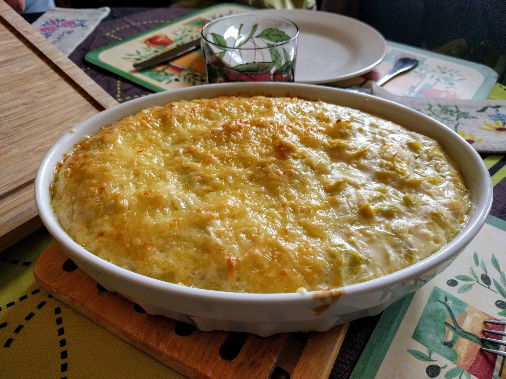

Fondue de poireaux

Version gratinée (voir variante 3 ci-dessous).
Pour 4 personnes :
- 5 ou 6 blancs de poireau (suivant la taille)
- De la crème liquide (ou : de la crème épaisse et du lait)
- De la farine
- Une noisette de beurre
- Un peu de gruyère râpé
- Sel, de poivre, noix de muscade.
- Couper les poireaux en tout petit et les faire blanchir environ 7 minutes dans de l'eau bouillante légèrement salée (à feu moyen).
- Enlever l'eau de la casserole, rajouter le beurre, un peu de crème liquide, et un peu de farine. Mélanger. Ajouter crème et farine jusqu'à ce que le mélange ait une consistance honnête : en gros, il faut que si on le pousse d'un côté avec une cuillère en bois puis qu'on enlève la cuillère, il se répartisse tout seul dans la casserole, mais lentement, en prenant son temps.
- Saler, poivrer, muscader, ajouter le gruyère râpé, mélanger de temps en temps. Laisser 25 minutes sur le feu. Corriger l'assaisonnement juste avant la fin de la cuisson, servir chaud.
Variante : Pour que le mélange se tienne mieux, on peut laisser refroidir le mélange, rajouter un œuf, bien mélanger, et réchauffer le tout avant de servir.
Variante 2 : On peut aussi rajouter des lardons.
Variante 3 : On peut se servir d'une fondue de poireaux pour faire un gratin : dans ce cas, ne cuire que 20 minutes, mettre le mélange dans un plat à gratin, parsemer de gruyère râpé, de chapelure, de petits bouts de beurre, et enfourner 5-10 minutes dans un four à 180°C (thermostat 6), jusqu'à ce que ça soit bien doré.